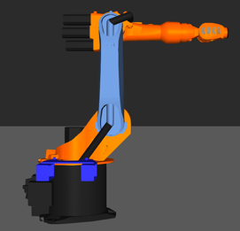
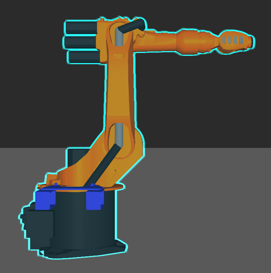
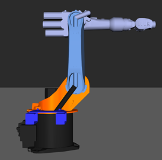
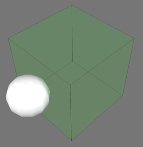
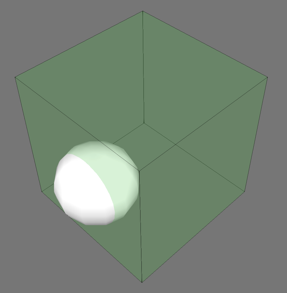
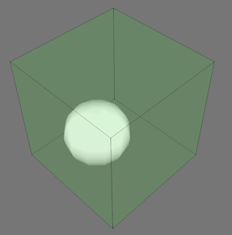

Contents Hide
| Name | Description |
| VC_ACTION_WORK | Work for a specific time or using specific RSL sequence. |
| VC_ACTION_TRANSPORT | Transport component to target component. |
| VC_ACTION_MOVE | Move resource component to the specific component (and location). |
| VC_ACTION_LOAD | Load component to the resource. |
| VC_ACTION_UNLOAD | Unload component from resource to given component. |
Work for a specific time or using specific RSL sequence at current place or location defined by component or vcMatrix.
Work action can use Python keyword notation or arguments alone (using keyword argument order).
| Name | Type | Required | Description |
| Worktime | Real | Always | Defines work time in seconds. |
| Place | vcComponent | Optional | Defines component where work takes place.
If Place is not defined, work is executed at resources current location. If Place is defined together with Location, Location is used as resource location. If only Place argument is defined, then resource location is defined by locating frame feature named ResourceLocation in the Place component. If ResourceLocation frame feature is not defined, then component origin is used as resource location. |
| Location | vcMatrix | Optional | Defines resource position during work in world coordinate system. |
| Sequence | String | Optional | Defines work animation/rsl sequence name. |
Transport moves part using resource to the world location, specified node or to the component container. Transporting can define optional FromComponent and FromLocation parameters to define the place where part can be loaded for transportation. If FromComponent is not defined, then part owner component is used instead. Transporting requires Part and any of the ToComponent, ToContainer, ToConnector parameters to define the place where part is transported. Optional PartLocation parameter defines exact part location.
Transporting to the specific component requires ToComponent and optional ToLocation to specify the exact resource location at component, otherwise the resource will use a frame called ResourceLocation as default location. Transporting to container can be expressed using ToContainer or ToConnector parameter. ToContainer parameter can use PartLocation to define the exact location.
Transport action can use Python keyword notation or parameters alone (using keyword parameter order).
| Name | Type | Required | Description |
| Part | vcComponent | Always | Defines the component to be delivered. |
| FromComponent | vcComponent | Optional | Defines the component where to pick up Part. |
| ToComponent | vcComponent | Optional | Defines the component where to deliver Part. |
| ToContainer | vcContainer | Optional | Defines the container type behavior Part is attached to in
the 3D world.
Optional ToLocation can define position in relation to container node coordinate system. |
| ToLocation | vcMatrix | Optional | Defines resource location. ToLocation used together with ToComponent uses world coordinate system to define the exact location. |
| ToConnector | vcConnector | Optional | Defines (input) connector where Part will be transferred. If Part cannot be transferred immediately due capacity, then action will wait until capacity is available. |
| PartLocation | vcMatrix | Optional | Defines the part location in the target component. PartLocation used together with ToContainer uses container owner node coordinate system to define the exact location. |
| FromLocation | vcMatrix | Optional | Defines resource location from where it will transport. FromLocation uses world coordinate system. |
Move resource to the specified component place or vcMatrix defined location. Action must include either Place or Location argument or both.
Move action can use Python keyword notation or parameters alone (using keyword parameter order).
| Name | Type | Required | Description |
| Place | vcComponent | Optional | Defines resource movement target.
If Place is defined together with Location, Location is used as target location. If only Place argument is defined, then target location is defined by locating frame feature named ResourceLocation in the Place component. If ResourceLocation frame feature is not defined, then component origin is used as target location. |
| Location | vcMatrix | Optional | Defines resource movement target location in world coordinate system. |
Load component to resource which can then move with it to other location or unload it to some other place.
Load action can use Python keyword notation or parameters alone (using keyword parameter order).
| Name | Type | Required | Description |
| Part | vcComponent | Always | Defines component to be loaded.
Resource component defines independently where the component is loaded, e.g. human worker carries component with one or two hands or a forklift carries the component using forks. |
Unloads carried part component to the world, specified node or to the component container. Unloading to world requires only Part to be defined. Unloading to the specific node requires ToNode and optional ToNodeLocation to specify the exact part location at node. Unloading to container can be expressed either using ToContainer or ToConnector parameter. ToContainer parameter can use ToNodeLocation to define the exact location.
Unload action can use Python keyword notation or parameters alone (using keyword parameter order).
| Name | Type | Required | Description |
| Part | vcComponent | Always | Defines component to be unloaded. |
| ToNode | vcNode | Optional | Defines node where Part will be attached. |
| ToContainer | vcContainer | Optional | Defines container behavior where part will be grabbed. Optional ToNodeLocation can define position in relation to container node coordinate system. |
| ToNodeLocation | vcMatrix | Optional | Defines exact position where part will be grabbed. Defines part origin position relative to ToNode or ToContainer owner node coordinate system. |
| ToConnector | vcConnector | Optional | Defines (input) connector where Part will be transferred. If Part cannot be transferred immediately due capacity, then action will wait until capacity is available. |
| Name | Description |
| VC_APPROACH_AXIS_POSITIVE_Z | Approach from positive Z-axis direction. |
| VC_APPROACH_AXIS_NEGATIVE_Z | Approach from negative Z-axis direction. |
| VC_APPROACH_AXIS_POSITIVE_Y | Approach from positive Y-axis direction. |
| VC_APPROACH_AXIS_NEGATIVE_Y | Approach from negative Y-axis direction. |
| VC_APPROACH_AXIS_POSITIVE_X | Approach from positive X-axis direction. |
| VC_APPROACH_AXIS_NEGATIVE_X | Approach from negative X-axis direction. |
| Name | Object |
| VC_ACTIONCONTAINER | vcActionContainer |
| VC_ARTICULATEDKINEMATICS | (Deprecated) vcBehaviour |
| VC_ARTICULATEDKINEMATICS2 | vcBehaviour |
| VC_BASECONTAINER | vcBehaviour |
| VC_BEHAVIOURSIGNAL | vcSignal |
| VC_BOOLEANPROPERTYCREATOR | vcFlow |
| VC_BOOLEANSIGNAL | vcBoolSignal |
| VC_BOOLEANSIGNALMAP | vcBooleanSignalMap |
| VC_BUCKETPATH | vcContainer |
| VC_CAPACITYCONTROLLER | vcBehaviour |
| VC_CARTESIANKINEMATICS | vcBehaviour |
| VC_COMPONENTCONTAINER | vcContainer |
| VC_COMPONENTCREATOR | vcComponentCreator |
| VC_COMPONENTFLOWPROXY | vcComponentFlowProxy |
| VC_COMPONENTGRABBER | (Deprecated) vcBehaviour |
| VC_COMPONENTPATHSENSOR | vcBehaviour |
| VC_COMPONENTSIGNAL | vcComponentSignal |
| VC_CONTAINER | vcBehaviour |
| VC_CONTAINERFILLER | vcFlow |
| VC_DELTAKINEMATICS | vcBehaviour |
| VC_DOCUMENTLINK | vcBehaviour |
| VC_FLOW | vcFlow |
| VC_FRAMESIGNAL | vcSignal |
| VC_INTEGERPROPERTYCREATOR | vcFlow |
| VC_INTEGERSIGNAL | vcIntegerSignal |
| VC_JOGINFO | vcBehaviour |
| VC_KINEMATICS | vcKinematics |
| VC_MATRIXSIGNAL | vcMatrixSignal |
| VC_NODELIST | vcNodeList |
| VC_NOTE | vcBehaviour |
| VC_ONEDIRECTIONALPATH | (Deprecated) vcContainer |
| VC_ONETOMANYINTERFACE | vcSimInterface |
| VC_ONETOONEINTERFACE | vcSimInterface |
| VC_ONEWAYPATH | vcMotionPath |
| VC_PARALLELLOGRAMKINEMATICS | vcBehaviour |
| VC_PARTICLESYSTEM | (Deprecated) vcBehaviour |
| VC_PATTERNCONTAINER | vcPatternContainer |
| VC_PROCESSEXECUTOR | vcProcessExecutor |
| VC_PROCESSPOINT | vcProcessPointSensor |
VC_PRODUCTCREATOR |
|
| VC_PYTHONKINEMATICS | vcBehaviour |
| VC_PYTHONPROCESSHANDLER | vcRslProcessHandler |
VC_PYTHONTRANSPORTCONTROLLER |
vcPythonTransportController |
| VC_RAYCASTSENSOR | vcBehaviour |
| VC_REALPROPERTYCREATOR | vcFlow |
| VC_REALSIGNAL | vcRealSignal |
| VC_REALSIGNALMAP | vcBehaviour |
| VC_ROBOTCONTROLLER | vcRobotController |
| VC_ROBOTEXECUTOR | vcExecutor |
| VC_ROUTINGRULE | vcRoutingRule |
VC_RSLEXECUTOR |
(Deprecated) vcRslProgramExecutor |
| VC_SCARAKINEMATICS | (Deprecated) vcBehaviour |
| VC_SCARAKINEMATICS2 | vcBehaviour |
| VC_SCRIPT | vcScript |
| VC_SERVOCONTROLLER | vcServoController |
| VC_STATISTICS | vcStatistics |
| VC_STRINGPROPERTYCREATOR | vcFlow |
| VC_STRINGSIGNAL | vcStringSignal |
| VC_TOOLCONTAINER | vcBehaviour |
| VC_TRICEPTKINEMATICS | vcBehaviour |
| VC_TRANSPORT | vcBehaviour |
| VC_TRANSPORTNODE | vcTransportNode |
| VC_TWODIRECTIONALPATH | (Deprecated) vcContainer |
| VC_TWOWAYPATH | vcMotionPath |
| VC_VEHICLE | vcBehaviour |
| VC_VOLUMESENSOR | vcBehaviour |
| Name | Description |
| VC_PATH_NO_TRIGGER | Sensor is not triggered at all by the component. |
| VC_PATH_LEADING_EDGE_TRIGGER | Sensor is triggered by the leading edge of the component. |
| VC_PATH_ORIGIN_TRIGGER | Sensor is triggered by the origin of the component. |
| VC_PATH_TRAILING_EDGE_TRIGGER | Sensor is triggered by the trailing edge of the component. |
| Name | Description |
| VC_BITMAP_RGB | Bitmap format of red green blue color model. |
| VC_BITMAP_RGBA | Bitmap format of red green blue alpha color model; uses RGB color model and allows for Alpha compositing (opacity and transparency). |
| Name | Python Class |
| VC_BOOLEAN_UNION | vcFeature |
| VC_BOOLEAN_INTERSECTION | vcFeature |
| VC_BOOLEAN_SUBTRACTION | vcFeature |
| Name | Description |
| VC_PHYSICSCOLLIDER_UNSPECIFIED | Collider is not defined nor created for feature. |
| VC_PHYSICSCOLLIDER_NONE | Collider not created for feature, for example root feature of node. |
| VC_PHYSICSCOLLIDER_BOX | Collider is a bounding box encompassing all geometry of feature and its subfeatures. |
| VC_PHYSICSCOLLIDER_BOXES | Collider is a set of bounding boxes, one for each geometry set of feature and its subfeatures. |
| VC_PHYSICSCOLLIDER_PRECISE | Collider is convex hull encompassing all geometry of feature and its subfeatures. |
A collision test detects a collision between one or more objects. A volume detector detects if a component collides with a box defined by two corner points, for example a safety zone. A collision detector detects if a component collides with another component.
A collision test uses node lists. Each node list contains one or more entries. Each entry is a node in a component, its scope, and whether or not the node is included/excluded in the test. For example, you could detect a collision between the arm of a robot and a positioner, ignore a collision between the tip of a welding torch and workpiece, and whether or not a human walks too close to a robot executing its program.
Scope defines what a node represents, for example all nodes in the same component as that node.
| Name | Description |
| VC_NODELIST_NODE | Adds only the node not its child nodes.
 |
| VC_NODELIST_COMPONENT | Adds all nodes in the same component.
 |
| VC_NODELIST_TREE | Adds the node and its child nodes.
 |
Inclusion defines if a node is active or ignored in collision test. Be aware the inclusion filter affects the node as well as its scope.
| Name | Description |
| VC_NODELIST_INCLUDE | Includes the node in test. |
| VC_NODELIST_EXCLUDE | Excludes the node in test. |
Testing defines how to check for collisions when using a volume detector. You can detect a collision using either the geometry or bound box of a node.
| Name | Description |
| VC_INTERSECT | Checks if specified node(s) intersects the surface of volume
detector. This is similar to using a collision detector that detects
the collision of geometry.
 |
| VC_CENTER_INSIDE | Checks if center of bounding box of specified node(s) is inside
volume detector.
 |
| VC_INSIDE | Checks if bounding box of specified node(s) is completely inside
volume detector.
 |
| Name | Description |
| VC_COMMAND_NORMAL | Abort all active commands when this command starts. |
| VC_COMMAND_TOOL | Executes this command on top of all active commands. Any previously active commands are suspended, which resume when command execution is complete. |
| VC_COMMAND_MODE | Abort all active commands that also are of type VC_COMMAND_MODE, and execute on top of the others. The camera control commands that implement panning, orbiting and zooming all have this type. |
| VC_COMMAND_OVERRIDE | Abort only the topmost command before executing this command. When command execution is completed any command that was aborted initially is restarted (only if the aborted command supports override activation). |
(Deprecated)
| Name | Description |
| VC_SHIFTSTATE_SHIFT | A shift key is pressed. |
| VC_SHIFTSTATE_ALT | An Alt key is pressed. |
| VC_SHIFTSTATE_CTRL | A control key is pressed. |
| VC_SHIFTSTATE_MOUSELEFT | The left mouse button is pressed. |
| VC_SHIFTSTATE_MOUSEMIDDLE | The middle mouse button is pressed. In some instances this can be the scroll button on a mouse. |
| VC_SHIFTSTATE_MOUSERIGHT | The right mouse button is pressed. |
| VC_SHIFTSTATE_CLICK | A single click has been detected. |
| VC_SHIFTSTATE_DOUBLECLICK | A double click has been detected. |
(Deprecated)
| Name | Description |
| VC_EVENT_MOUSE_DOWN | A mouse button has been pressed in the 3D window. |
| VC_EVENT_MOUSE_UP | A mouse button has been released in the 3D window. |
| VC_EVENT_MOUSE_MOVE | The mouse has been moved over the 3D window. |
| VC_EVENT_MOUSE_WHEEL | The mouse when has been moved over the 3D window. |
| VC_EVENT_KEY_DOWN | A key has been pressed. |
| VC_EVENT_KEY_UP | A key has been released. |
| Name | Description |
| VC_USE_FEATURE_BACKFACE_MODE | Backfaces of component geometry are visible or invisible based on the ShowBackfaces property of each Geometry feature. |
| VC_FORCE_BACKFACE_OFF | Backfaces of component geometry are invisible. |
| VC_FORCE_BACKFACE_ON | Backfaces of component geometry are visible. |
| Name | Description |
| VC_NODE_REBUILD | The component node tree is rebuilt. |
| VC_NODE_UPDATE_NODE | Node1 is updated. |
| VC_NODE_ADD_FIRST_CHILD | Node2 is added as first child for node1. |
| VC_NODE_ADD_LAST_CHILD | Node2 is added as last child for node1. |
| VC_NODE_REMOVE_NODE | Node1 is removed. |
| VC_NODE_INSERT_FIRST_SIBLING | Node2 is added as first sibling for node1. |
| VC_NODE_INSERT_LAST_SIBLING | Node2 is added as last sibling for node1. |
| VC_NODE_INSERT_AFTER_SIBLING | Node2 is added as sibling after node1. |
| VC_NODE_INSERT_BEFORE_SIBLING | Node2 is added as sibling before node1. |
| VC_NODE_REPLACE_NODE | Node1 is replaced by node2. |
| Name | Description |
| VC_EXPORT_NONE | Component geometry is not exported into the 3D PDF document. |
| VC_EXPORT_COMPLETE | Component geometry is fully exported into the 3D PDF document. |
| VC_EXPORT_GEOMETRY_BOUND | Component geometry sets are exported as blocks. |
| VC_EXPORT_NODE_BOUND | Component links are exported as blocks. |
| VC_EXPORT_COMPONENT_BOUND | Component is exported as a block. |
| Name | Integer | Description |
VC_SIMULATION_DETAILED |
0 | Use this mode to simulate component movements as accurate as possible, thereby simulating full range of motion for component. |
VC_SIMULATION_BALANCED |
1 |
Use this mode to simulate component movements in a way that is balanced with performance of simulation, thereby component may move from point to point without simulating unnecessary joint motions. |
VC_SIMULATION_FAST |
2 |
Use this mode to simulate component movements as quickly as possible, thereby component may snap to joint configuration or jump from point to point. |
| Name | Description |
| VC_NOT_AVAILABLE | Target is not available for transportation, e.g. no capacity. |
| VC_AVAILABLE | Target is available. |
| VC_REDIRECTED | Target is available as redirected. For example, a machine has a buffer where it places components instead of allowing the component to be transported directly to the machine. |
| Name | Description |
| VC_CONNECTOR_CAPACITY_LEADING | Test before component's leading edge can transfer. |
| VC_CONNECTOR_CAPACITY_ORIGIN | Test before component's origin can transfer. |
| VC_CONNECTOR_CAPACITY_TRAILING | Test before component's trailing edge can transfer. |
| Name | Description |
| VC_CONNECTOR_NONE | Connection cannot receive or send components. |
| VC_CONNECTOR_INPUT | Connection can receive components. |
| VC_CONNECTOR_OUTPUT | Connection can send components. |
| VC_CONNECTOR_INPUT_OUTPUT | Connection can receive and send components. |
| Name | Description |
| VC_PATH_FORWARD | Conveyor contents are moved forwards from the first frame to the last frame. |
| VC_PATH_BACKWARD | Conveyor contents are moved backwards from the last frame to the first frame. |
| VC_PATH_FORWARD_AUTO | Similar to VC_PATH_FORWARD. However, the conveyor automatically changes direction to VC_PATH_BACKWARD_AUTO if a component is transferred in from the conveyor's second connector (InOut2). |
| VC_PATH_BACKWARD_AUTO | Similar to VC_PATH_BACKWARD. However, the conveyor automatically changes direction to VC_PATH_FORWARD_AUTO if a component is transferred in from the conveyor's first connector (InOut1). |
| Name | Description |
| VC_PATH_STEP | No interpolation is performed between frames, so a component's position changes from one frame to the next without any movement in between frames. |
| VC_PATH_LINEAR | The path is interpolated as straight lines between the frames. |
| VC_PATH_CUBIC | A cubic spline is used to interpolate the path from one frame to the next. |
| Name | Description |
| VC_CONTEXT_AUTHOR | "Author" context for modeling components. |
| VC_CONTEXT_CONFIGURE | "Configure" context for building a layout. |
| VC_CONTEXT_DRAWING | "Drawing" context for creating drawings. |
| VC_CONTEXT_TEACH | "Teach" context for teaching robots. |
| VC_CONTEXT_PROCESS | "Process" context for process modelling. |
| Name | Description |
| VC_CONTROLLER_START | Event type for a controller. |
| VC_CONTROLLER_RUNNING | Event type for a controller. |
| VC_CONTROLLER_END | Event type for a controller. |
| VC_CONTROLLER_STOP | Event type for a controller. |
| VC_CONTROLLER_UNREACHABLE | Event type for a controller. |
| VC_CONTROLLER_COLLISIONS | Event type for a controller. |
| Name | Description |
| VC_TRACKWORLDFRAME_TRACKORIGIN | The origin of track component is used as Robot World Frame. |
| VC_TRACKWORLDFRAME_ROBOTWORLD | The Robot World Frame of robot is used not the track origin. |
| Name | Description |
| VC_PHYSICS_INPHYSICS | Object affected by physics, including internal and external forces. |
| VC_PHYSICS_OUTOFPHYSICS | Object not affected by physics. |
| VC_PHYSICS_KINEMATIC | Object affected by physics, excluding internal forces such as gravity. |
| VC_PHYSICS_INCONTAINER | Object affected by physics, and system monitors transition of object into and out of containers. |
| Name | Feature | Python Class |
| VC_ANGULARCLONE | Angular Clone | vcFeature |
| VC_BLOCK | Block | vcFeature |
| VC_BOOLEAN | Boolean | vcFeature |
| VC_CONE | Cone | vcFeature |
| VC_CYLINDER | Cylinder | vcFeature |
| VC_EXTRUDE | Extrude | vcFeature |
| VC_FRAME | Frame | vcFeature |
| VC_GEOMETRY | Geometry | vcGeometryFeature |
| VC_LINEARCLONE | Linear Clone | vcFeature |
| VC_MIRROR | Mirror | vcFeature |
| VC_PLANE | Plane | vcFeature |
| VC_PYTHONFEATURE | Python feature | vcFeature |
| VC_REVOLVE | Revolve | vcFeature |
| VC_SPHERE | Sphere | vcFeature |
| VC_SWITCH | Switch | vcFeature |
| VC_TEXT | ||
| VC_TRANSFORM | Transform | vcFeature |
| VC_WEDGE | Wedge | vcFeature |
| Name | Integer | Description |
| VC_SINGLE_FEED_MODE | 0 | Creates products at a given time interval until the limit is reached. |
VC_BATCH_FEED_MODE |
1 |
Creates batches of products in a sequence. |
VC_TABLE_FEED_MODE |
2 | Creates products by reading from an Excel file. See vcProductCreatorTableMode for more information. |
VC_DISTRIBUTION_FEED_MODE |
3 | Creates products using a series of entries with a weighted probability. See vcProductCreatorDistributionFeed for more information. |
| Name | Description |
| VC_DISTRIBUTION_FEED_MODE | Creates products using a series of entries with a weighted probability. See vcProductCreatorDistributionMode for more information. |
| VC_SEQUENCE_FEED_MODE | Creates products using a sequence of statements. See vcProductCreatorSequenceMode for more information. |
| VC_SINGLE_FEED_MODE | Creates products using a single statement. |
| VC_TABLE_FEED_MODE | Creates products by reading from an Excel file. See vcProductCreatorTableMode for more information. |
| Name | Description |
| VC_FRAMEDISPLAY_DOT | Frames rendered as dots. |
| VC_FRAMEDISPLAY_COLOR_AXIS | Frames rendered using individually colored axis lines.
Red Green Blue |
| VC_FRAMEDISPLAY_AXIS | Frames rendered using axis lines with the same material as the frame set. |
| VC_FRAMEDISPLAY_CUSTOM | Frames rendered using the icon defined in CustomIcon property. |
| Name | Description |
| VC_LINEDISPLAY_LINE | Connecting lines rendered as a single line. |
| VC_LINEDISPLAY_EXTRUDE | Connecting lines rendered by extruding the icon specified by CustomIcon along the lines. |
| Name | Description |
| VC_COMPACTLINESET | Contains line sets. |
| VC_FRAMESET | Contains frame sets. |
| VC_LINESET | Contains line primitives. (Deprecated) Use VC_COMPACTLINESET. |
VC_POINTSET |
Contains point sets. |
| VC_POLYGONSET | Contains polygonal primitives. (Deprecated) Use VC_TRIANGLESET. |
| VC_TEXT2DSET | Contains 2D text geometry sets. |
| VC_TEXT3DSET | Contains 3D text geometry sets. |
| VC_TRIANGLESET | Contains triangle sets. |
| VC_AMBIENT_OCCLUSION_NONE | Ambient occlusion rendering is not used. |
| VC_AMBIENT_OCCLUSION_VERTEX | Geometry uses vertex ambient occlusion values. Ambient occlusion value is located in the point texture coordinate U parameter. Ambient occlusion value is defined by a range of 0 - 1.0 in which 0 defines the point is fully occluded and 1.0 means the point is fully visible for lighting. |
| VC_VERTEXCOLOR | Vertex color overrides the lighting calculations. |
| VC_VERTEXCOLOR_LIGHTED | Lighting calculation is blended with the color of the vertex. |
| Name | Description |
| VC_COLOR_CONFIGURATION_BGRA | A BGRA color format. |
| VC_COLOR_CONFIGURATION_RGBA | A RGBA color format. |
| Name | Description |
| VC_EDGE_BOUNDARY | The edge is shared with one polygon. |
| VC_EDGE_CO_PLANAR | The angle between neighboring polygons is near zero. |
| VC_EDGE_HARD | The angle between neighboring polygons is greater than the CreaseAngle of the vcPolygonSet. |
| VC_EDGE_INTERSECTION | (Currently not implemented) |
| VC_EDGE_LINE | (Currently not implemented) |
| VC_EDGE_NON_MANIFOLD | The edge is shared with more than one polygon. |
| VC_EDGE_SOFT | The angle between neighboring polygons is less than the CreaseAngle of the vcPolygonSet. |
| Name | Description |
| VC_GRAB_ASSEMBLY_DELETE_IF_EMPTY | If the detected product is the last product inside an assembly, the product will be grabbed and the empty assembly will be deleted and the product will be grabbed but rest of the assembly is left untouched. |
| VC_GRAB_ASSEMBLY_KEEP | If the detected product is inside an assembly, the product will be grabbed but rest of the assembly is left untouched. |
| VC_GRAB_ASSEMBLY_GRAB | If the detected product is inside an assembly, the whole assembly will be grabbed. |
| Name | Description |
| VC_IEVENT_OPEN | Indicates the command starts. |
| VC_IEVENT_CHANGE | Indicates any change has happened. |
| VC_IEVENT_INTERACTIVE_START | Indicates that interactive manipulation, such as dragging a handle, starts. |
| VC_IEVENT_INTERACTIVE_CHANGE | Indicates that interactive change has happened, such as handle movement. |
| VC_IEVENT_INTERACTIVE_END | Indicates the interaction ends. |
| VC_IEVENT_CLOSE | Indicates the command closes. |
| Name | Integer | Description |
| VC_FLOWFIELD | 0 | Delivers material flow between two behaviors. |
| VC_HIERARCHYFIELD | 1 | Attaches this component into the hierarchy of the other component. |
| VC_SIGNALFIELD | 2 | Delivers signals to behaviors that the signal is connected to. Allows communication between components. |
VC_RSLFIELD |
3 |
(Deprecated) Publishes/subscribes vcRslRoutine objects of RSL programs between components. |
| VC_JOINTEXPORTFIELD | 4 | Exports the joint definitions allowing connected component to drive external joints. |
| VC_TOOLEXPORTFIELD | 5 | Exports/Imports joint definitions allowing connected component to use external tools. |
| VC_BASEEXPORTFIELD | 6 | Exports/Imports base definitions allowing connected components to use external bases. |
| VC_INTEGERCOMPATIBILITYFIELD | 7 | Used for controlling what interfaces can connect to. In order to connect, the opposing interface needs to have a matching integer compatibility field definition. |
| VC_ACTIONFIELD | 8 | Used for sending and receiving actions associated with an Action Container, e.g. a robot and tool grasp and release action. |
| VC_TRANSPORTFIELD | 9 | Used for input/output of transportation tasks via a Transport Protocol, e.g. two conveyors send pickup requests and the request is outputted to a resource. |
| VC_PROCESSORFIELD | 10 | Used for parent/child connection and interaction with path and sensor behaviors contained in separate components. |
| Name | Description |
| VC_INTERPOLATION_MODE_NONE | A base or tool frame has no effect on external configuration. |
| VC_INTERPOLATION_MODE_BASE | The External TCP property is set to false (base) or true (tool). |
| VC_INTERPOLATION_MODE_TCP | The External TCP property is set to true (base) or false (tool). |
| Name | Description |
| VC_JOINTAXIS_MINUS_X | Negative x-axis. |
| VC_JOINTAXIS_MINUS_Y | Negative y-axis. |
| VC_JOINTAXIS_MINUS_Z | Negative z-axis. |
| VC_JOINTAXIS_PLUS_X | Positive x-axis. |
| VC_JOINTAXIS_PLUS_Y | Positive y-axis. |
| VC_JOINTAXIS_PLUS_Z | Positive z-axis. |
| Name | Description |
| VC_JOINTTYPE_CUSTOM | A joint defined by an expression. |
| VC_JOINTTYPE_FIXED | A static joint, which has no DOF object. |
| VC_JOINTTYPE_ROTATIONAL | A rotational joint. |
| VC_JOINTTYPE_ROTATIONAL_FOLLOWER | A rotational joint that is dependent on the value of another joint. |
| VC_JOINTTYPE_TRANSLATIONAL | A linear joint. |
| VC_JOINTTYPE_TRANSLATIONAL_FOLLOWER | A linear joint that is dependent on the value of another joint. |
| Name | Description |
| VC_JOINT_ROTATIONAL | Defines a joint assigned to a controller as a rotational joint. |
| VC_JOINT_TRANSLATIONAL | Defines a joint assigned to a controller as a linear joint. |
| Name | Type | Python Class |
| VC_LAYOUTITEM_IT_3DICON | 3D Icon | vc3DIcon |
| VC_LAYOUTITEM_IT_ANNOTATION | Annotation | vcAnnotation |
| VC_LAYOUTITEM_IT_COLLISIONDETECTOR | Collision Detector | vcCollisionDetector |
| VC_LAYOUTITEM_IT_DIMENSION | Dimension | vcDimension |
| VC_LAYOUTITEM_IT_LAYOUTPROPERTYLIST | Layout Property List/Container | vcLayoutPropertyList |
| VC_LAYOUTITEM_IT_LAYOUTSCHEMAPROPERTYLIST | Layout Schema Property List/Container | vcLayoutSchemaPropertyList |
VC_LAYOUTITEM_IT_LAYOUTPACKFOLDER |
Pack Folder for Layout File |
|
| VC_LAYOUTITEM_IT_PATHOBJECT | Path Object/Data Container | vcPathObject |
| VC_LAYOUTITEM_IT_REPORTCHART | Report/Chart | vcReport |
| VC_LAYOUTITEM_IT_SWEPTVOLUME | Swept Volume | vcSweptVolume |
| ViewAnimation | View Animator | vcViewAnimation |
| Name | Description |
| VC_LIGHT_AMBIENT | Ambient type of light. |
| VC_LIGHT_DIRECTIONAL | Directional type of light. |
| VC_LIGHT_POINT | Point type of light. |
| VC_LIGHT_SPOT | Spot type of light. |
| Name | Description |
| VC_MATERIAL_COLORMASK_RED | Color used to render a RGB or RGBA color mask. |
| VC_MATERIAL_COLORMASK_GREEN | Color used to render a RGB or RGBA color mask. |
| VC_MATERIAL_COLORMASK_BLUE | Color used to render a RGB or RGBA color mask. |
| VC_MATERIAL_COLORMASK_ALPHA | Color used to render a RGBA color mask with opacity. |
| Name | Description |
| VC_MATERIAL_DEPTH_NEVER | Testing never passes, so geometry pixels are not rendered. |
| VC_MATERIAL_DEPTH_ALWAYS | Depth testing passes always, so geometry pixels are rendered. |
| VC_MATERIAL_DEPTH_LESS | Testing passes if geometry pixel distance is less than Z buffer stored value. |
| VC_MATERIAL_DEPTH_LEQUAL | Testing passes if geometry pixel distance is less than or equal to Z buffer stored value. |
| VC_MATERIAL_DEPTH_EQUAL | Testing passes if geometry pixel distance is equal to Z buffer stored value. |
| VC_MATERIAL_DEPTH_GEQUAL | Testing passes if geometry pixel distance is greater than or equal to Z buffer stored value. |
| VC_MATERIAL_DEPTH_GREATER | Testing passes if geometry pixel distance is greater than Z buffer stored value. |
| VC_MATERIAL_DEPTH_NOTEQUAL | Testing passes if geometry pixel distance is not equal to Z buffer stored value. |
| Name | Description |
| VC_MATERIAL_TRANSPARENCY_NONE | Defines opacity not be used in the material. |
| VC_MATERIAL_TRANSPARENCY_CONSTANT | Opacity is constant using an Opacity value. |
| VC_MATERIAL_TRANSPARENCY_MAP | Opacity uses a texture alpha map to define what areas are opaque.
Alpha value of 0.5 is used as a threshold. |
| Name | Description |
| VC_MATERIAL_PRE_ORDER | Renders geometry before normal rendering. |
| VC_MATERIAL_NORMAL_ORDER | Renders geometry during normal pass. |
| VC_MATERIAL_POSTSORT_ORDER | Renders geometry using sorted order after normal rendering. |
| VC_MATERIAL_POST_ORDER | Renders geometry after normal pass. |
| Name | Description |
| VC_MATERIAL_MAP_NORMAL | Uses geometry texture coordinates U and V to map textures/project them. |
| VC_MATERIAL_MAP_SPHERICAL | Uses spherical projection which calculates automatically texture coordinates. |
| Name | Description |
| VC_MENU_DRAWING | When Drawing tab is active, context menu of drawing world. |
| VC_MENU_FEATURE | When Modeling tab is active, context menu of node feature tree in Component Graph panel. |
| VC_MENU_HOME | When Home tab is active, context menu of 3D world. |
| VC_MENU_MODELING_TOOLGALLERY_FEATURE | On Modeling tab, in Geometry group, Tools menu. |
| VC_MENU_MODELING_WIZARDS | On the Modeling tab, in the Extra group, Wizards menu. This
requires a string that designates an existing or new section in
the Wizards menu.
VC_MENU_MODELING_WIZARDS + '/<SectionName>' |
| VC_MENU_PROGRAM_EXPORT_PROGRAMS | On the Program tab, in the Program Modules group, Export menu.
This requires a string that designates an existing or new section
in the Export menu.
VC_MENU_PROGRAM_EXPORT_PROGRAMS + '/<SectionName>' |
| VC_MENU_PROGRAM_IMPORT_PROGRAMS | On the Program tab, in the Program Modules group, Import menu.
This requires a string that designates an existing or new section
in the Import menu.
VC_MENU_PROGRAM_IMPORT_PROGRAMS + '/<SectionName>' |
| VC_MENU_PROGRAM_STATEMENT | When the Program tab is active, context menu of statements in robot program displayed in Program Editor panel. |
| Name | Description |
| VC_TOOLSIZE_IMAGE_AND_TEXT_LARGE | The tool image is shown as large with text. |
| VC_TOOLSIZE_IMAGE_AND_TEXT_NORMAL | The tool image is shown as normal with text. |
| VC_TOOLSIZE_IMAGE_ONLY | Only the tool image is shown. |
You can also use the following string ids.
| Name | Description |
| VcAuthor3DContextMenu | When Modeling tab is active, context menu of 3D world. |
| VcAuthorTreeViewBasesContextMenu | In Component Graph panel, context menu of Bases collection for Robot Controller and Base Container behaviors. |
| VcAuthorTreeViewBehaviorsContextMenu | In Component Graph panel, context menu of behavior. |
| VcAuthorTreeViewFeaturesContextMenu | In Component Graph panel, context menu of feature. |
| VcAuthorTreeViewNodesContextMenu | In Component Graph panel, context menu of node/link. |
| VcAuthorTreeViewPropertiesContextMenu | In Component Graph panel, context menu of property in root node. |
| VcAuthorTreeView | In Component Graph panel, context menu of Tools collection for Robot Controller and Tool Container behaviors. |
| VcConfigure3DContextMenu | When Home tab is active, context menu of 3D world. |
| VcTeach3DContextMenu | When Program tab is active, context menu of 3D world. |
| Name | Description |
| VcConfigureQuickmenu | When Home tab is active, mini toolbar for a selected component. |
| Name | Description |
| VcTabAuthor/<group name> | On the Modeling tab, in a new or existing Ribbon group. |
| VcTabDrawing/<group name> | On the Drawing tab, in a new or existing Ribbon group. |
| VcTabHome/<group name> | On the Home tab, in a new or existing Ribbon group. |
| VcTabTeach/<group name> | On the Program tab, in a new or existing Ribbon group. |
| Name | Integer | Description |
| VC_MESSAGE_BUTTONS_ABORTRETRYIGNORE | 0 | Displays Abort, Retry and Ignore buttons. |
| VC_MESSAGE_BUTTONS_OK | 1 | Displays OK button. |
| VC_MESSAGE_BUTTONS_OKCANCEL | 2 | Displays OK and Cancel buttons. |
| VC_MESSAGE_BUTTONS_RETRYCANCEL | 3 | Displays Retry and Cancel buttons. |
| VC_MESSAGE_BUTTONS_YESNO | 4 | Displays Yes and No buttons. |
| VC_MESSAGE_BUTTONS_YESNOCANCEL | 5 | Displays Yes, No and Cancel buttons. |
| Name | Integer | Description |
| VC_MESSAGE_RESULT_ABORT | 0 | Returns Abort message, e.g. Abort button clicked. |
| VC_MESSAGE_RESULT_CANCEL | 1 | Returns Cancel message. |
| VC_MESSAGE_RESULT_IGNORE | 2 | Returns Ignore message. |
| VC_MESSAGE_RESULT_NO | 3 | Returns No message. |
| VC_MESSAGE_RESULT_OK | 4 | Returns OK message. |
| VC_MESSAGE_RESULT_RETRY | 5 | Returns Retry message. |
| VC_MESSAGE_RESULT_YES | 6 | Returns Yes message. |
| Name | Integer | Description |
| VC_MESSAGE_TYPE_INFO | 0 | Displays Information type message. |
| VC_MESSAGE_TYPE_QUESTION | 1 | Displays Question type message. |
| VC_MESSAGE_TYPE_WARNING | 2 | Displays Warning type message. |
| VC_MESSAGE_TYPE_ERROR | 3 | Displays Error type message. |
| VC_MESSAGE_TYPE_CUSTOM | 4 | Displays Custom type message. |
| Name | Description |
| VC_MOTION_JOINT | Joint type of movement executed by robot. See also Motion Target Constants. |
| VC_MOTION_LINEAR | Linear motion executed by robot. |
| Name | Description |
| VC_MATRIXMODE_AXISX | Rotates with minimal movement around X-axis. |
| VC_MATRIXMODE_AXISY | Rotates with minimal movement around Y-axis. |
| VC_MATRIXMODE_AXISZ | Rotates with minimal movement around Z-axis. |
| VC_MATRIXMODE_AXISWPR | Interpolates yaw, pitch and roll angles separately for movement. |
| VC_MATRIXMODE_AXISZYZ | Interpolates Euler angles separately for movement. |
| VC_MATRIXMODE_ONEAXIS | Rotates around axis of shortest rotation for movement. |
| VC_MATRIXMODE_WRIST | Rotates by directly interpolating wrist joints for movement. |
The following constants specify how component space utilization is calculated for paths.
| Name | Description |
| VC_PATH_AXIS_AUTOMATIC | The general direction of the path is determined and the most appropriate axis is selected automatically. If the axis cannot be determined to a reasonable tolerance, VC_PATH_AXIS_GENERIC is used. |
| VC_PATH_AXIS_X_POSITIVE | The distance from the origin to the maximum X axis extent of the component bound box is used to space the component. This corresponds to the behavior of the old conveyor types. |
| VC_PATH_AXIS_Y_POSITIVE | The distance from the origin to the maximum Y axis extent of the component bound box is used to space the component. |
| VC_PATH_AXIS_Z_POSITIVE | The distance from the origin to the maximum Z axis extent of the component bound box is used to space the component. |
| VC_PATH_AXIS_X_NEGATIVE | The distance from the origin to the minimum X axis extent of the component bound box is used to space the component. |
| VC_PATH_AXIS_Y_NEGATIVE | The distance from the origin to the minimum Y axis extent of the component bound box is used to space the component. |
| VC_PATH_AXIS_Z_NEGATIVE | The distance from the origin to the minimum Z axis extent of the component bound box is used to space the component. |
| VC_PATH_AXIS_GENERIC | A worst-case maximum extent value is calculated from the component bound box, and used to space the component. |
The following constants define the motion state of a component on a path.
| Name | Description |
| VC_MOTION_STOPPED | The component is stopped, either because the conveyor or the component itself has been explicitly stopped. |
| VC_MOTION_MOVING | The component is moving on the conveyor. |
| VC_MOTION_BLOCKED | The component has been stopped because it is being blocked by a component or conveyor in front of it. |
| VC_MOTION_FAILURE | The component has been stopped as a result of the conveyor entering a failure state. |
| Name | Description |
| VC_MOTIONTARGET_AM_DISTANCE | Defines the accuracy for a motion target based on distance, e.g. 5 mm. |
| VC_MOTIONTARGET_AM_TIME | Defines the accuracy for a motion target based on time, e.g. a time limit for reachability. An accuracy method that utilizes time should be considered if, for example, a user sets a Cycle Time for a particular motion. |
| VC_MOTIONTARGET_AM_VELOCITY | Defines the accuracy for a motion target based on velocity. |
These constants refer to linear interpolation.
| Name | Description |
| VC_MOTIONTARGET_CM_FIXED | A robot's configuration does not change (no change). |
| VC_MOTIONTARGET_CM_FOLLOW_FRAME | A robot's configuration changes slightly to minimize joint value difference between its previous configuration (small change). |
| VC_MOTIONTARGET_CM_INTERPOLATE_JOINT_VALUES | A robot's configuration is determined by point to point interpolation of its joint values. |
| Name | Description |
| VC_MOTIONTARGET_KW_OK | Motion target can be reached. |
| VC_MOTIONTARGET_KW_UNREACHABLE | Motion target cannot be reached. |
| VC_MOTIONTARGET_KW_JOINTLIMIT | Motion target cannot be reached due to joint limit constraints. |
| VC_MOTIONTARGET_KW_SINGULAR | Motion target, or the position creates a singularity, i.e. infinite solutions when one or two joints no longer represent independent controlling variables. For example, joints have a 0º value and become parallel. |
| Name | Description |
| VC_MOVECORD_TOOL | An offset uses the tool coordinate system for moving a robot to a relative position. |
| VC_MOVECORD_BASE | An offset uses the base coordinate system for moving a robot to a relative position. |
| VC_MOVECORD_WORLD | An offset uses the world coordinate system for moving a robot to a relative position. |
| Name | Description |
| VC_MOTIONTARGET_TURN_NEAREST_WITHIN_LIMITS | A joint's turn behavior is based on a solution nearest to the target position and within the joint's limits. |
| VC_MOTIONTARGET_TURN_NEAREST | Similar to turning within limits, except solution is not restricted to limitations of joints. |
| VC_MOTIONTARGET_TURN_ZERO | A joint's turn behavior is based on a solution within -180º
to 180º and within the joint's limits.
Some robots can perform motions ± 360 degrees. |
| Name | Description |
| VC_MOTIONTARGET_MT_JOINT | Joint type of motion a robot controller uses to move to a target, i.e. motion is based on joint values and tolerance. |
| VC_MOTIONTARGET_MT_LINEAR | Linear type of motion a robot controller uses to move to a target. For example, the motion itself is a straight or linear motion based on a vector from a start point to target position. |
| Name | Description |
| VC_MOTIONTARGET_TM_NORMAL | The target matrix uses a default or normal type of relationship with a robot. |
| VC_MOTIONTARGET_TM_ROBOTROOT | The target matrix relates to a robot's root node. |
| VC_MOTIONTARGET_TM_STATICTOOL | The target matrix relates to a robot's static tool. |
| VC_MOTIONTARGET_TM_EXTERNALBASE | The target matrix relates to an external base in relation to a robot. |
| VC_MOTIONTARGET_TM_WORLDTARGET | The target matrix relates to a world target in relation to a robot. |
| Name | Description |
| VC_MATERIAL_DISABLED | Never use node's material. |
| VC_MATERIAL_INHERIT | Inherit node's material to geometries in the node and its child nodes that do not have VC_MATERIAL_FORCE set. |
| VC_MATERIAL_FORCE_INHERIT | Inherit node's material to geometries in the node and all its child nodes. |
| VC_MATERIAL_INHERIT_NODE | Inherit node's material to all geometries in the node that do not have VC_MATERIAL_FORCE set. |
| VC_MATERIAL_FORCE_INHERIT_NODE | Inherit node's material to all geometries in this node. |
| VC_MATERIAL_INHERIT_LEVEL | Inherit node's material to all geometries on the same level that do not VC_MATERIAL_FORCE set. If node is world root then all the nodes in the world will be affected. If node is a component then all the nodes inside the component will be affected. Otherwise, only the node itself will be affected. |
| VC_MATERIAL_FORCE_INHERIT_LEVEL | Inherit node's material to all geometries on the same level. If node is world root then all the nodes in the world will be affected. If node is a component then all the nodes inside the component will be affected. Otherwise, only the node itself will be affected. |
| Name | Description |
| VC_WORLD | Node is world root. |
| VC_COMPONENT | Node is vcComponent. |
| VC_NODE | Node is vcNode. Node can never exist without a component. |
| Name | Type | Python Class |
| VC_PATHOBJECT_NT_ANY | Node | (Deprecated) Any type of node called with this constant. |
| VC_PATHOBJECT_NT_ACTION | Action | (Deprecated) Path Object type to vcPathObjectActionNode |
| VC_PATHOBJECT_NT_MOTION | Motion | (Deprecated) Path Object type to vcPathObjectMotionNode |
| VC_PATHOBJECT_NT_PARAMETER | Parameter | (Deprecated) Path Object type to vcPathObjectParameterNode |
| VC_PATHOBJECT_NT_REFERENCE | Reference | (Deprecated) Path Object type to vcPathObjectReferenceNode |
| Name | Description |
| VC_MATCH_STATE_CREATED | This is the initial state where the match has been created. |
| VC_MATCH_STATE_CANCELLED | The match has been cancelled before it was finalized. |
| VC_MATCH_STATE_FINALIZED | The match has been committed to, and the product can be sent to the next process. |
| VC_MATCH_STATE_DISPOSED | The match has been finished or cancelled. The matched vcProductNeed and vcProductFeed are released, so that they van be re-used and matched again. |
| Name | Description |
| VC_MATCH_MODE_INDEPENDENT | The match is independent of process requirements. |
| VC_MATCH_MODE_PROCESS_SOLVER | The match needs to meet particular process requirements. |
| Name | Description |
VC_BUFFERMODE_FIFO |
First-In, First-Out order, like a queue. |
| VC_BUFFERMODE_LIFO | Last-In, First-Out order, like a stack. |
| Name | Description |
| VC_PROCESSMODE_ALLINANYORDER | All process groups must be visited, before moving to next step. |
| VC_PROCESSMODE_FIRSTMATCH | Only one of process groups must be visited, before moving to next step. |
| Name | Description |
VC_NODEVISIBILITYSTATE_TOGGLE |
Toggle between visible and invisible. |
| VC_NODEVISIBILITYSTATE_VISIBLE | Make the node visible. |
| VC_NODEVISIBILITYSTATE_INVISIBLE | Make the node invisible. |
| Name | Description |
| VC_LIST_ADD | Adds an element to the list |
| VC_LIST_REMOVE | Removes an element from the list |
| VC_LIST_REPLACE | Replaces an element from the list |
| VC_LIST_RESET | Resets the list |
| Name | Description |
VC_STATISTICSFLOWDIRECTION_ENTER |
Product enters. |
| VC_STATISTICSFLOWDIRECTION_LEAVE | Product leaves. |
| Name | Value | Description |
VC_TIMESOURCE _DISTRIBUTION |
0 | Sample from a distribution. |
| VC_TIMESOURCE_EXPRESSION | 1 | Evaluate an expression. |
| Name | Description |
| VC_TRANSPORTINTYPE_PREVIOUSPROCESS | Reserve a product instance and use the transport system to transport it. |
| VC_TRANSPORTINTYPE_CONTAINER | Wait for a matching product to arrive to a component container. |
| Name | Description |
VC_TRANSPORTOUTTYPE_NEXTPROCESS |
Send the product to the next process by using the transport system. |
| VC_TRANSPORTOUTTYPE_CONTAINER | Place the product to a component container. |
| VC_TRANSPORTOUTTYPE_TRANSPORTNODE | Send the product to a transport node using the transport system. |
| Name | Description |
| VC_PROCESSPOINT_OWNER | Owner component of the behavior used. |
| VC_PROCESSPOINT_PROCESSED | Component being processed is used. |
| VC_PROCESSPOINT_STOP_PAT | Processing stops all components in the path. |
| VC_PROCESSPOINT_STOP_COMPONENT | Processing stops only processed component at path. |
| Name | Description |
| VC_PROPERTY_DEFAULT | No constraints used. |
| VC_PROPERTY_LIMIT | Property will have upper and lower limits. |
| VC_PROPERTY_STEP | Property will have defined steps. |
| Name | Description | Works with vcCommand | Works with vcComponent |
| List<Ref<Behaviour>> | A vcBehaviour reference list property. | Yes | Yes |
| List<Ref<Component>> | A vcComponent reference list property. | Yes | Yes |
| List<Ref<ComponentGroup> | A reference list property to multiple sets of grouped components in the 3D world. | Yes | No |
| List<Ref<Feature>> | A vcFeature reference list property. | No | Yes |
| List<Ref<Node>> | A vcNode reference list property. | Yes | Yes |
| List<Ref<Parameter>> | A vcProperty reference list property. | Yes | Yes |
| List<Ref<ProcessFlowGroup>> | A vcProcessFlowGroup reference list property. | ||
| List<Ref<Product>> | A vcProduct reference list property. | ||
| List<Ref<ProductType>> | A vcProductType reference list property. | ||
| List<Ref<TransportNode>> | A vcTransportNode reference list property. | ||
| List<Ref<TransportLink>> | A vcTransportLink reference list property. | ||
| Ref<BaseFrame> | A vcBaseFrame reference property. | Yes | No |
| Ref<Behaviour> | A vcBehaviour reference property. | Yes | Yes |
| Ref<Component> | A vcComponent reference property. | Yes | Yes |
| Ref<ComponentGroup> | A reference property to a set of grouped components in the 3D world. | Yes | No |
| Ref<Feature> | A vcFeature reference property. | No | Yes |
| Ref<Material> | A vcMaterial reference property. | Yes | Yes |
| Ref<Node> | A vcNode reference property. | Yes | Yes |
| Ref<Parameter> | A vcProperty reference property. | Yes | Yes |
| Ref<Product> | A vcProduct reference property. | ||
| Ref<ProductType> | A vcProductType reference property. | ||
| Ref<TransportNode> | A vcTransportNode reference property. | ||
| Ref<TransportLink> | A vcTransportLink reference property. | ||
| Ref<ToolFrame> | A vcToolContainer reference property. | Yes | No |
| VC_BOOLEAN | A boolean property. | Yes | Yes |
| VC_DISTRIBUTION | A real distribution property. | Yes | Yes |
| VC_INTEGER | An integer property. | Yes | Yes |
| VC_REAL | A real property. | Yes | Yes |
| VC_STRING | A string property. | Yes | Yes |
| VC_VECTOR | A vector property. | Yes | Yes |
| VC_MATRIX | A matrix property. | Yes | Yes |
| VC_EXPRESSION | An expression property. | Yes | Yes |
| VC_URI | An Uri property. | Yes | Yes |
| VC_BUTTON | A button property. | Yes | Yes |
| Name | Description |
| VC_QUANTITY_SCALAR | Creates a scalar quantity. |
| VC_QUANTITY_VECTOR | Create a vector quantity. |
| Name | Description |
| VC_RECORDER_PDF | Records a PDF file for a simulation. |
| VC_RECORDER_VIDEO | Records a video file for a simulation. |
| Name | Description |
| VC_NO_SHADOW | Renders no shadows in an application. |
| VC_HARD_FLOOR_SHADOW | Renders hard type floor shadows for components. |
| Name | Description |
| VC_ROUTING_OWNER | Owner component of the behavior is used for rule processing. |
| VC_ROUTING_PROCESSED | Component being routed is used for rule processing. |
| Name | Description |
| VC_SIGNALMAP_DIRECTION_UNDEFINED | Sets the signal map direction to Undefined. |
| VC_SIGNALMAP_DIRECTION_INPUT | Sets the signal map direction to Input. |
| VC_SIGNALMAP_DIRECTION_OUTPUT | Sets the signal map direction to Output. |
| Name | Type | Python Class |
| VC_SELECTION_ANNOTATION | Annotation | Selection type to vcAnnotation |
| VC_SELECTION_BEHAVIOUR | Behavior | Selection type to vcBehaviour |
| VC_SELECTION_COMPONENT | Component | Selection type to vcComponent |
| VC_SELECTION_DIMENSION | Dimension | Selection type to vcDimension |
| VC_SELECTION_EDGE | Edge | Selection type to vcEdge |
| VC_SELECTION_FEATURE | Feature | Selection type to vcFeature |
| VC_SELECTION_GEOMETRYSET | Geometry Set | Selection type to vcGeometrySet |
| VC_SELECTION_LINE | Line | Selection type to vcLine |
| VC_SELECTION_NODE | Node | Selection type to vcNode |
| VC_SELECTION_PARENTNODE | Node | Selection type to vcNode |
| VC_SELECTION_POINT | Point | Selection type to vcPoint |
| VC_SELECTION_POLYGON | Polygon/Triangle Set | Selection type to vcPolygon |
| VC_SELECTION_PATHOBJECT | Path Object | Selection type to vcPathObject |
| VC_SELECTION_PATHOBJECT_ACTIONNODE | Action Node | (Deprecated) Selection type to vcPathObjectActionNode |
| VC_SELECTION_PATHOBJECT_MOTIONNODE | Motion Node | (Deprecated) Selection type to vcPathObjectMotionNode |
| VC_SELECTION_PATHOBJECT_PARAMETERNODE | Parameter Node | (Deprecated) Selection type to vcPathObjectParameterNode |
| VC_SELECTION_PATHOBJECT_REFERENCENODE | Reference Node | (Deprecated) Selection type to vcPathObjectReferenceNode |
| VC_SELECTION_PATHOBJECT_SEGMENT | Segment | (Deprecated) Selection type to vcPathObjectSegment |
| VC_SELECTION_ROBOTBASE | Base | Selection type to vcBaseFrame |
| VC_SELECTION_ROBOTTOOL | Tool | Selection type to vcBaseFrame |
| VC_SELECTION_RSLPROGRAM | RSL Program | (Deprecated) Selection type to
vcRslProgramExecutor
Use vcTeachContext |
| VC_SELECTION_RSLROUTINE | RSL Routine | (Deprecated) Selection type to
vcRslRoutine
Note: Use vcTeachContext |
| VC_SELECTION_RSLSTATEMENT | RSL Statement | (Deprecated) Selection type to
vcRslStatement
Note: Use VC_SELECTION_STATEMENT or vcTeachContext |
| VC_SELECTION_SELECTION | Command | Selection type to vcSelection.
This constant registers a command regardless if there is a selection of components. Single Section Multi Selection |
| VC_SELECTION_STATEMENT | Robot Statement | Selection type to vcStatement |
| Name | Integer | Description |
| VC_SOLUTION_REACHABLE | 0 | Indicates solution target is reachable. |
| VC_SOLUTION_UNREACHABLE | 1 | Indicates solution target is unreachable. |
| VC_SOLUTION_JOINT_LIMIT | 2 | Indicates joint values for solution exceed limits. |
| VC_SOLUTION_SINGULARITY | 4 | Indicates solution causes joint singularity. |
| VC_SOLUTION_NOT_CALCULATED | 8 | Indicates joint values have not been calculated for solution. |
Statements constants are used for adding new statements in vcScope.
| Name | Description |
| VC_STATEMENT_BREAK | Ends the execution of a loop statement. |
| VC_STATEMENT_COMMENT | Creates a user defined message. |
| VC_STATEMENT_CONTINUE | Jumps to the next iteration in a loop statement. |
| VC_STATEMENT_HALT | Halts a simulation until a user defined event triggers the continuation of the simulation. |
| VC_STATEMENT_SETPROPERTY | (Assign statement). Defines the value of a property either in the same routine, program, component or robot executor. |
| Name | Description |
| VC_STATEMENT_APPENDTOLIST | Joins content of source variable to end of the target variable. |
| VC_STATEMENT_ATTACHPRODUCT | Attaches one product to another. |
| VC_STATEMENT_BUFFERPRODUCTS | Buffer statement creates a temporary storage for products in a grid pattern. Multiple products can be coming in and leaving the buffer in parallel. |
| VC_STATEMENT_CHANGEPRODUCTTYPE | Change Type statement changes one or more product instances to be of another product type both logically and visually. |
| VC_STATEMENT_CREATEPRODUCT | Create product statement waits for free capacity at the target Container and then creates a new product instance. |
VC_STATEMENT_FINDFLOWSTEP |
Finds next or previous process flow steps relative to an existing flow step. |
VC_STATEMENT_DETACHPRODUCT |
Detach statement detaches one or more components of one or more products from the component of a common parent product. |
VC_STATEMENT_GETPROPERTY |
Get Property statement creates a runtime variable that acts as a proxy to a property. The proxy variables value and the targeted propertys value are tied together such that changing one means changing the other as well. The targeted property can be a static components property or a static components behaviors property. |
VC_STATEMENT_GETFLOWSTEP |
A GetFlowStatement gets information about a step in a process sequence to a ProcessFlowInfo process variable. |
VC_STATEMENT_MOVEJOINT |
Move Joint statement uses a servo controller behavior to move a joint to given value and waits until the motion completes. |
| VC_STATEMENT_PRINT | A Print statement allows you to print feedback in the Output panel. |
| VC_STATEMENT_PROCESSDELAY | Delay statement waits for a specified amount of simulation time. |
| VC_STATEMENT_PROCESSIF | Creates a conditional statement for executing a collection of statements if a given expression evaluates as True. |
| VC_STATEMENT_PROCESSWHILE | While statement executes Scope in a loop as long as Condition evaluates to True. |
| VC_STATEMENT_PROPERTYCONDITION | Creates a process requirement based on a property value. The targeted property can be a static components property or a static components behaviors property. Note: This is a requirement statement and thus can be only added to the Requirements routine of a process routine. |
| VC_STATEMENT_RELEASEPRODUCTRESERVATION | Release Product Reservation statement releases reserved product instances which are reserved by ReserveProduct one or more statements. Reservation cannot be released after a products transport has started. |
| VC_STATEMENT_REMOVEPRODUCT | Remove statement deletes one or more product instances and resets value of the variable. |
| VC_STATEMENT_RESERVEPRODUCT | Reserve Product statement creates a process requirement for a matching product to be available and reserves it for this process. Note: This is a requirement statement and thus can be only added to the Requirements routine of a process routine. |
| VC_STATEMENT_RUNROBOTROUTINE | Waits until the robot is idle, then evaluates the given RoutineName expression and tries to find the routine, then start the routine, and waits until the routine has been executed to completion. |
| VC_STATEMENT_SELECTPRODUCTS | Copies product instance references from one list to another variable. Product type filtering can be applied to only copy some product references. |
| VC_STATEMENT_SENDSIGNAL | Send Signal statement sends a simulation signal, i.e. triggers a vcSignal behavior, with a given value. |
VC_STATEMENT_SETNEXTFLOWSTEP |
Overwrites the next process information in product instances, enabling jumps and loops. |
| VC_STATEMENT_SETNODEMATERIAL | Set Node Material statement changes the material of a node in one or more product instances components. |
| VC_STATEMENT_SETNODEVISIBILITY | Changes the visibility of a node in one or more product instances components. |
| VC_STATEMENT_SETSTATISTICSFLOW | Flow statement updates statistics behavior and it records one or more products components transferring in or out. If more than one product is given as input, they are all recorded at once. |
| VC_STATEMENT_SETSTATISTICSSTATE | Sets the current state of a statistics behavior. |
| VC_STATEMENT_STARTTRANSPORTIN | Start Transport In statement transports one or more products into the process. More than one pre-reserved product can be transported in, otherwise transports only a single product. The statement execution is asynchronous, meaning that next statements may execute before the transport is finished. Must be used in combination with the Wait Transport statement. |
| VC_STATEMENT_STARTTRANSPORTOUT | Transports one or more products out from the process in parallel. The statement execution is asynchronous, meaning that next statements may execute before the transport is finished. Must be used in combination with the Wait Transport statement. |
| VC_STATEMENT_SWITCHCASE | Switch Case statement executes the first vcCaseScope for which the value of its CaseCondition property matches that of statements Condition property. |
| VC_STATEMENT_TRANSPORTIN | Transport In statement sequentially transports one or more products into the process and waits until they have arrived. More than one pre-reserved product can be transported in, otherwise transports only a single product. |
| VC_STATEMENT_TRANSPORTOUT | Defines a transport node where to send the products using the transport system. |
| VC_STATEMENT_TRANSPORTPATTERNIN | Sequentially transports products into a regular grid pattern and waits until they have arrived. |
| VC_STATEMENT_WAITPROPERTYCONDITION | Waits for a variables value to pass a specified condition. |
| VC_STATEMENT_WAITSIGNAL | Wait Signal statement waits for signal to be triggered with a value that matches a given condition or until an optional timeout is reached. |
| VC_STATEMENT_WAITTRANSPORT | Wait Transport statement waits for one or more transport operations started with StartTransportIn or StartTransportOut statements to complete. |
| VC_STATEMENT_WORK | Sends a work request to a transport controller and waits until the work is complete. |
| Name | Description |
| VC_STATEMENT_BREAK | |
| VC_STATEMENT_CALL | Calls a subroutine sequence/program. |
| VC_STATEMENT_CUSTOM | Creates a template for executing a user-defined statement. |
| VC_STATEMENT_COMMENT | |
| VC_STATEMENT_CONTINUE | |
| VC_STATEMENT_DELAY | Creates a user defined delay measured in seconds. |
| VC_STATEMENT_GRASP | (Deprecated) Creates a Grasp action for a robot's tool. |
| VC_STATEMENT_HALT | |
| VC_STATEMENT_HOME | (Deprecated) Returns to default robot state pre-simulation. |
| VC_STATEMENT_IF | Creates a conditional statement for executing a collection of statements if a given expression evaluates as True. |
| VC_STATEMENT_LINMOTION | Creates a linear motion for a robot to a position; similar to VC_MOTION_LINEAR. |
| VC_STATEMENT_PATH | Creates a statement for executing a path of positions. |
| VC_STATEMENT_PRINT | Prints feedback to the Output panel. |
| VC_STATEMENT_PROCESS | Creates a position statement of type vcPositionStatement that is implemented as a process statement. |
| VC_STATEMENT_PTPMOTION | Creates a point to point motion using a robot's joints; similar to VC_MOTION_JOINT. |
| VC_STATEMENT_RELEASE | (Deprecated) Creates a Release action for a robot's tool. |
| VC_STATEMENT_REMOTECALL | (Deprecated) Triggers a remote robotic action via a subscriber to a publisher, i.e. parent robot triggers child sequence/program. |
| VC_STATEMENT_REMOTEWAIT | (Deprecated) Defines if a robot waits for remote action to finish or to receive IO in a parent-child relationship. |
| VC_STATEMENT_RETURN | Ends the execution of a called subroutine and returns to caller of that routine. |
| VC_STATEMENT_SETBIN | Creates an output signal map (bool), e.g. pick up and retain a box with a robot's tool. |
| VC_STATEMENT_SETPROPERTY | |
| VC_STATEMENT_SETROBOTSTATISTICSSTATE | |
| VC_STATEMENT_SWITCHCASE | |
| VC_STATEMENT_WAITBIN | Creates an input signal map (bool), e.g. a robot waits to receive a signal from another component before executing other statements. |
| VC_STATEMENT_WHILE | Creates a conditional statement for executing a collection of statements in a loop while a given expression evaluates as True. |
| VC_STATEMENT_DEFINE_BASE | Defines a base location for RSL programming. |
| VC_STATEMENT_DEFINE_TOOL | Defines a tool location for RSL programming. |
| VC_STATEMENT_PROG_SYNC | Creates a method for synchronizing robotic motions with two or more robots. |
Notes:
| Name | Description |
| VC_CHARTTYPE_NONE | Empty chart. |
| VC_CHARTTYPE_LINE | Line chart. |
| VC_CHARTTYPE_COLUMN | Column chart. |
| VC_CHARTTYPE_BAR | Bar chart. |
| VC_CHARTTYPE_AREA | Area chart. |
| VC_CHARTTYPE_PIE | Pie chart. |
| Name | Description |
| VC_TILETYPE_DUMMY | Location is used for grid layout purposes only. |
| VC_TILETYPE_PLACEHOLDER | Location is empty. |
| VC_TILETYPE_ACTUALTILE | Location is not empty. |
Constants for defining the data type of statistics chart.
| Name | Description |
| VC_DATATYPE_ONESAMPLEDVALUE | Used for interval-based statistics. For example, discrete values reported for a recorded interval. |
| VC_DATATYPE_MINMAXAVERAGEVALUES | Used for cumulative statistics. For example, values that accumulate over time. |
Constants for defining the state of Statistics behavior.
| Name | Integer | Description |
| VC_STATISTICS_WARMUP | 1 | Reports when a component is in a warm up state. |
| VC_STATISTICS_BREAK | 2 | Reports when a component is in a break state. |
| VC_STATISTICS_IDLE | 3 | Reports when a component is in an idle state. |
| VC_STATISTICS_BUSY | 4 | Reports when a component is in a busy state. |
| VC_STATISTICS_BLOCKED | 5 | Reports when a component is in a blocked state. |
| VC_STATISTICS_BROKEN | 6 | Reports when a component is in a broken state. |
| VC_STATISTICS_REPAIR | 7 | Reports when a component is in a repair state. |
| VC_STATISTICS_SETUP | 8 | Reports when a component is in a setup state. |
| Name | Integer | Description |
| VC_CONVEXHULL | 0 | One convex hull with no decomposition. |
| VC_DECOMPOSITION | 1 | Convex decomposition with one or more convex hulls. |
| VC_CONVEXHULL_TRIMESH | 2 | One convex hull for each triangle mesh |
| Name | Integer | Description |
| VC_SWEPT_LOFTING | 0 | Uses lofting to generate swept geometry. |
| VC_SWEPT_HULL_FROM_HULLS | 1 | Uses hull from hulls method to generate geometry. |
| VC_SWEPT_HULL_FROM_SILHOUETTES | 2 | Uses hull from silhouettes method to generate geometry. |
| Name | Description |
| VC_CURVE_TESSELLATED | A tessellated line or polyline. |
| VC_CURVE_POLYLINE | A polyline curve (spline of degree 1). |
| VC_CURVE_SPLINE | A spline curve. |
| VC_FACE_TESSELATED | A tessellated face without mathematical representation. |
| VC_FACE_PLANAR | A mathematical planar face. |
| VC_FACE_NURBS | A mathematical NURBS face. |
| VC_FACEDISPLAY_OUTER_CURVELOOP | Display only surface outer curved loop. |
| VC_FACEDISPLAY_INNER_CURVELOOPS | Display only inner curved loop(s). |
| VC_FACEDISPLAY_ALL_CURVELOOPS | Display all surface curved loops. |
| VC_FACEDISPLAY_FACE | Display shaded surface. |
| Name | Description |
| VC_QUANTITY_SCALAR | Quantity type in which a magnitude or numerical value is given. |
| VC_QUANTITY_VECTOR | Quantity type in which both a magnitude or numerical value and direction are given. |